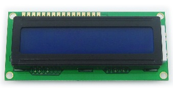
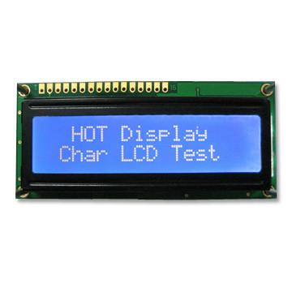

之所以叫做LCD1602，是因为这种字符型显示器，能显示16×2个字符，即每行16个字符，共2行。 再来看一下LCD1602的引脚图：

#include <reg51.h>
typedef unsigned char uint8;
typedef unsigned char bool;
typedef unsigned int uint16;
#define true 1
#define false 0
sbit LCD1602_RS=P3^4;
sbit LCD1602_RW=P3^3;
sbit LCD1602_E=P3^2;
#define LCD1602_PORT P1
static void lcd1602_delay(uint16 p_time)
{
while(p_time--);
}
static void lcd1602_write_cmd(uint8 p_cmd)
{
lcd1602_delay(100);
LCD1602_E=0;
lcd1602_delay(10);
LCD1602_RS=0;
lcd1602_delay(10);
LCD1602_RW=0;
lcd1602_delay(10);
LCD1602_PORT=p_cmd;
lcd1602_delay(10);
LCD1602_E=1;
lcd1602_delay(50);
LCD1602_E=0;
}
static void lcd1602_write_data(uint8 p_data)
{
lcd1602_delay(100);
LCD1602_E=0;
lcd1602_delay(10);
LCD1602_RS=1;
lcd1602_delay(10);
LCD1602_RW=0;
lcd1602_delay(10);
LCD1602_PORT=p_data;
lcd1602_delay(10);
LCD1602_E=1;
lcd1602_delay(50);
LCD1602_E=0;
}
其中实现的lcd1602_write_cmd和lcd1602_write_data分别实现了向LCD1602写入一个字节的指令与写入一个字节的数据的功能。
接下来就是要介绍一下如何通过指令来使用LCD1602的各个功能。以下7个函数是我封装完的几个最常用的功能，可以直接使用。如果接口电路不同，只需要修改上面的引脚定义部分：
sbit LCD1602_RS=P3^4; sbit LCD1602_RW=P3^3; sbit LCD1602_E=P3^2; #define LCD1602_PORT P1各个功能与相应的代码如下： 1、初始化为16×2字符，每个字符5×8点阵的形式：
void lcd1602_init()
{
uint8 t_cmd=0x38;
lcd1602_write_cmd(t_cmd);
t_cmd=0x06;
lcd1602_write_cmd(t_cmd);
}
2、显示/隐藏字符、显示/隐藏光标、闪烁/静止光标：
void lcd1602_display_switch(bool p_show_char,bool p_show_cursor,bool p_flash_cursor)
{
uint8 t_cmd=0x08;
if(p_show_char)
{
t_cmd|=0x04;
}
if(p_show_cursor)
{
t_cmd|=0x02;
}
if(p_flash_cursor)
{
t_cmd|=0x01;
}
lcd1602_write_cmd(t_cmd);
}
3、向左/向右移动光标：
void lcd1602_cursor_shift(bool p_right)
{
uint8 t_cmd;
if(p_right)
{
t_cmd=0x14;
}
else
{
t_cmd=0x10;
}
lcd1602_write_cmd(t_cmd);
}
4、清屏：
void lcd1602_clear()
{
uint8 t_cmd=0x01;
lcd1602_write_cmd(t_cmd);
}
5、光标归位：
void lcd1602_cursor_return()
{
uint8 t_cmd=0x02;
lcd1602_write_cmd(t_cmd);
}
6、在指定坐标设置字符（p_x=0~15,p_y=0~1）：
void lcd1602_char_set(uint8 p_x,uint8 p_y,char p_char)
{
uint8 t_cmd=0x80;
p_x&=0x0f;
p_y&=0x01;
t_cmd|=p_x;
if(p_y)
{
t_cmd|=0x40;
}
lcd1602_write_cmd(t_cmd);
lcd1602_write_data(p_char);
}
7、从指定位置开始设置字符串（p_x=0~15，p_y=0~1，p_string必须是以0结尾的字符串）：
void lcd1602_string_set(uint8 p_x,uint8 p_y,const char* p_string)
{
uint8 t_x,t_y;
p_x&=0x0f;
p_y&=0x01;
for(t_y=p_y;t_y<2;t_y++)
{
for(t_x=p_x;t_x<16&&(*p_string)!=0;t_x++)
{
lcd1602_char_set(t_x,t_y,*(p_string++));
}
}
}